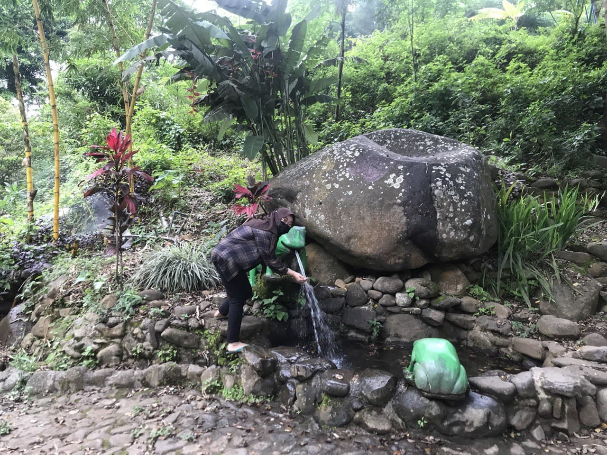

Tourist Attractions
Yes, this is the end of my suffering. Now I will talk about tourist attraction you can visit when you are
in my hometown, Kediri. Well, it's not like I'm a trip animal, so I won't be able to say much.
Haha, this introvert will tell you everyting she knows.
Of course the first one is Sumber Podang! Literally tanslate as Podang Water Source,
this place is healing spot especially for those with long stay in cities staring at landscapes of
high building. Actually, I have quite ulterior motive for writing about Sumber Podang.
My mom has a small shop there, selling food and drinks. I help her out every saturday and sunday.
Thinking about it, I don't really have a weekend. Below is an image of Sumber Podang.

That is my sister in the picture. You thought it was me? Haha how could I be that slim?
I think I also need to talk about Kediri Waterpark. But, actually if I wrote about it,
it mostly would be criticism. So I'll just give you one tip. There is a good 'jenang' shop
beside its entrance. You should try it if you come to Kediri Waterpark. Okay goodbye!
Don't forget to check out my other posts~